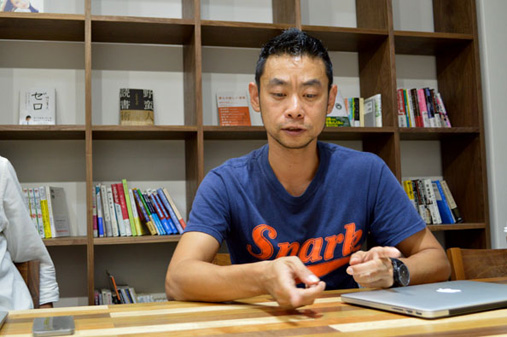
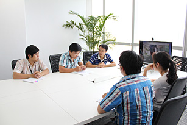
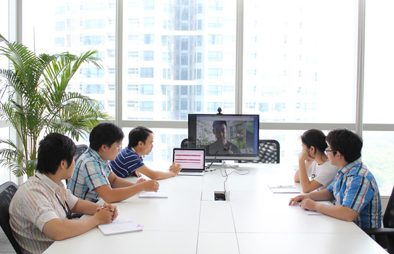
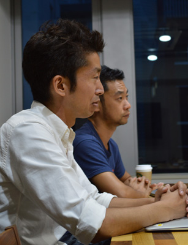
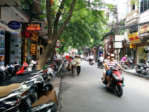
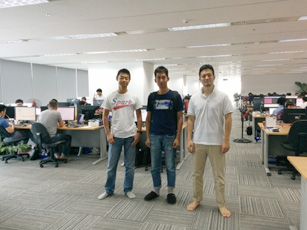

デジタルコンテンツ業界の注目起業がオフショア開発を選んだ理由とは？
ピースオブケイクが切り開くコンテンツの未来
株式会社ピースオブケイク・CEO加藤氏、CTO原永氏インタビュー

原永：今のところ３箇所を同時につないで打ち合わせをすることはありません。日本とシンガポールの僕、ベトナムとシンガポールの僕でやっています。Github上でエンジニア同士が会話をしているので、ベトナムの子に僕が伝えるべきことは、「今これをやってください」「なぜならば」の部分です。
原永：オフショアの一番いけていないところが「これやってね」といって丸投げしてしまうところ。マネージャーがバックグラウンドなどを説明せずに、これやっておいてとぽーんと投げて、出来上がったものが「こんなはずじゃなかった」というパターンがほとんどの原因だと思うんですね。
２年前にベトナムに行った時に、オフショアのシステム会社をいろいろと回ったんですよ。そのときに、めちゃめちゃショッキングなことがあって、憤ったことがありました。ある会社に行ったら社長が「エンジニアの技術が伸びないようにしています」というんですよ。意味がわからないので、理由を聞くと、「給料があがるから」と。エンジニアの技術があがると給料も上がるのである一定のレベルになると首を切るという世界の話を聞いて、エンジニアとして怒りを覚えました。こんな会社がいては、ベトナム人の人たちもハッピーになれません。同じ人間としてエンジニアとして、こんな働きかたをしていたら絶対に幸せになれないと思いました。

同じメンバーとして目指すところを共有するようにしている
自分たちでオフショアをやることになり気をつけているのは、単に「これをやれ」とかではなく、まず加藤さんにも実際に行ってもらって、cakesやnoteの意義を全部話してもらい、同じメンバーとして目指すところを共有してもらいました。
あとはひとつひとつのタスク。僕はイシューをつくるんですけど、こういうことやってねと毎週ミーティングをして、これをやる理由「なぜならば、サポートスタッフが今こういうことで悩んでいるから。君はこれを作ることで時間を節約できる。だから作って欲しい」という風に説明をしています。仕事の順番や意味を感じながら作ってもらうと、すごい喜ぶんですよ。リリースされた時も「今日リリースされたよ」と伝えたら「グッド・ニュースだ！」といって喜んでくれたり、やりがいを感じてくれるので、そういうコミュニケーションを重視してやっています。
原永：最終的はそうなりたいです。まだ、そこまでいっていなくて、今まではオフショアの部隊を作るという長い歴史があって、教育をしてきました。そこを打ち破るのは難しいなと思っていて、時間は掛かるんですけども、これからやっていくうちに感じてもらっていけたらなと思っています。
日本、ベトナム、僕（シンガポール）、全部いっしょにいてもコミュニケーションコストが余計に掛かるだけなので、日本のみんなと僕でまず考え、オフショアのスタッフには僕からタスクのバックグラウンドを説明しています。
原永：基本的にはチャットワークで会話をして、ベトナムで書いてもらったコードをまずあちらのマネージャーがレビューをした後で、日本のチーム二人でレビューをして、おかしなところがあったらGithub上の掲示板でやりとりをして完成まで持っていくという流れで開発をしています。音声でのミーティングはスカイプの動画チャットで週一でやっています。臨機応変に文字でやるときと、文字だと誤解が生まれるようなときや顔をみて話をするようにしています。

原永氏とフランジアチームのビデオ会議の様子
原永：まだ始まったばっかりなのであまりないんですけど、みんなの考え方として、振られる仕事を待つという姿勢は変えたいと思っています。日報を毎日書いてもらっているんですよ。これは僕のこだわりで、泥臭いんですけど結構重要だなと思っていて日本のチームは絶対に書くように言っています。特に、今日何をやったかではなく、次に何をやるか、というのを重視しています。それをやることで、その人が次にやることが見えているかを判断しています。
ベトナムの子は、「明日やること」をずっと書いてなかったんですよ。これを書いてないことは、自分がやることをわかっていないことなので、なんでもいいから書くように伝えました。もしないのであれば、例えばテストコードといったプログラムがあるんですけど、それを自分でやれそうなことをイシュー化して、まず登録をしておきなさいと、言っています。ずっと待っていて、僕が指示をしないといけないという関係が続いていく限り、完全に丸投げなオフショアになってしまうので、それはよくない、自分から書きなさいと教えています。
原永：そうですね。日本だと、そういう人を採用しているのもあり自分で考えて僕が言わなくてもやれる子が多いので、ベトナムのチームもそのようにしていきたいです。
原永：めちゃくちゃタフなことですね。びっくりするくらいタフです。アジアの開発というと適当にやって、自分が納得いったら帰るようなイメージを持っていました。実際はぜんぜん違って、遅くまで頑張ってくれていますし、責任感がもの凄く強い国民性なのかなという印象があります。お願いしたことはちゃんと最後までやってくれます。同じ人間で違う国民、民族、でも同じ言語が書けるので、同じようなことを考えていて、あんまり違いはないんですよね。
タフで向上心が高いのですが、向き不向きはあって、僕らはいろんな世界中のサービスを見ているので、何が良くて何が美しいのかということを感覚的にわかるんですよ。彼らはそんなにものを見ていなくて感覚が洗練されていないので、仕方ないんですけど、インターフェイスの部分になるほど苦手なところはありますね。でも、ロジカルに考えるのはむちゃくちゃ得意です。適材適所に仕事を割り振ることでうまくいくなぁと思いますね。

原永：普通オフショアは日本語でやりとりをしているところが多いと思うんでけど、僕は、それは良くないなと思っています。こっちにあわせてくださいというよりは、お互い歩み寄って英語でコミュニケーションした方がフェアだと思い、英語を使っています。僕も向こうも英語はネイティブではなく得意じゃない、でも英語でコミュニケーションをとります。日本側のエンジニアも英語を使うことで、みんなの知識や仕事のレベルが上がると思っています。違う言語でコミュニケーションをとりながらも、みんなで同じところを目指して仕事をしています。
今後、５年くらいで日本だけでエンジニアを雇うのはより難しい時代がやってくると思うんですよ。いつか向こうの人たちとやらないといけなくなるはずです。グローバルで強いチームを作るというのを、このタイミングからできているとうのはすごい良かったと思っています。みんなが慣れてきているので、他の会社よりも進んでいると思います。
加藤：先ほどコンテンツの多様性の話をしたじゃないですか。人も同じで、多様な人とやったほうが組織として強くなれると思うんですよ。違うところは全然違うし、でもいっしょのことはいっしょ。人間はここがいっしょなんだなとわかりながら仕事ができることは意味のあることだと思っています。
原永：今まで気が付かなったこともあり、自分も成長させてもらっています。学校をやっていた時も、教えることで自分も成長すると感じていました。日本人だけでやらないといけないというのが、逆に不思議です。
原永：コスト的なメリットとコミュニケーションコスト、金銭的なコスト、これを天秤にかけて、当初はコミュニケーションコストがかなり高いと思っていたんですけど、それがいけるなとわかったタイミングがありました。金銭的なコストは、年間10%くらい伸びていて今後も伸びていくとは思います。日本人の新卒と変わらないくらいになって、コストメリットがあまり感じられなくなる日が来ると思います。でも日本で出来る人がいないけど、ベトナムに出来る人がいる、給料を払ってでもやって欲しいという日が来るのであれば、金銭的コストよりは今の機会を大切にしてちゃんと作っておいたほうがいいかなと判断しています。
加藤：お金の面の意味合いは、現時点では多少はあるんですけど、我々が一番重視しているのは、原永さんが言ったいろんな人と仕事をするという話と、やっぱり優秀な人と仕事がしたいんですよ。それは別にエンジニアに限った話ではないんですけど、優秀な人がそこにいるんだからやらない理由がないということが一番大きいことかなと思いますね。

「優秀な人がそこにいるんだからやらない理由がない」
加藤：原永さんと二人でハノイとホーチミン両方みて、僕は特にハノイが気に入りましたね。何が気に入ったかというと、街がすごく活気に溢れていているところですよね。アジア全域でそういう空気だと思うんですけど、みんな上を向いて暮らしているといいところがすごく良いと思いました。しかもエンジニアの子たちができる子たちなんですよね。ハノイ工科大学に行って優秀な子たちと会って話をしましたが、優秀な人たちはガッツがあるんですよ。実際にどこまで仕事ができるかは、会ったくらいではわからないんだけど少なくとも気合が入ってるんですよ。
これすごく重要で、人間の能力なんて大差はなくて、やる気が勝負を分けると思うんですよね。だから、気合が入っているこの人たちと仕事がしたいなって思ったんですね。ハノイは街もこじんまりとしていて、非常にきれいないい街です。仕事にも集中できそうですし、そこにフランジアさんの会社があったのでお願いすることにしました。
原永：知人の紹介で、CEOの藤本さん、平井さんとシンガポールのスタバで会ったことがきっかけです。お会いをして、僕がやりたいことを実現してくれている人がいるんだと思いました。藤本さんの話を聞いていて、あれだけ人を育てることを真剣にやられていて、人を歯車として使うのではなくて、自分もいちエンジニアとして生きていけという思想をずっと語り続けていて、福利厚生もしっかりした会社をやっているというのは、どんぴしゃでした。僕がやりたいことをやってくれていた人がいて、すごいなぁとびっくりしました。
原永：満足はしているので、特に要望はないのですが、次のこと（ネクストタスク）を自分で考えられない子が多いので、会社としていっしょにやっていきませんかという話はさせていただいております。
原永：実際何社かおすすめさせていただいていて、ホーチミンにも同じような会社はいくつかあるんですけど、全部みていて「思想という面で間違いはないです」という点はお伝えさせていただいています。とはいえ、ひとつだけ大事なこととして、自分がしっかりしてないといけないよ、ということだけは言ってはいます。
加藤：そうですね。ちゃんと会話してマネジメントしていかないといけないので、それができる人がいる人が必要ですね。
原永：それができない場合はおすすめできません。よくミャンマーで開発したんですけど、失敗しました、紹介してもらえませんか、と言われて、そのマインドだと同じことを繰り返すから、ぜんぶやるつもりでやるならいいと思うと言っています。最初は日本人とやるよりコミュニケーションコストが掛かるので、どこかで抜けたときにうまくいきます。そこまで覚悟しながらいくというのは必要かなと思います。

ハノイの風景（加藤氏撮影）

フランジアのオフィスにて
ベトナムのオフショア開発の視察、システム開発に関するご質問、
お仕事のご相談、お見積の依頼など、お気軽にお問い合わせください。